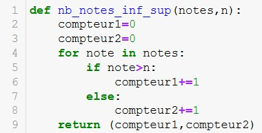

Activité sur les tableaux#
Introduction#
En informatique et en mathématiques, certaines données sont multiples comme les coordonnées d’un point dans un repère avec l’abscisse et l’ordonnée.
On représente ces données avec des tableaux. Une variable peut contenir plusieurs valeurs contenues dans un tableau.
Prenons l’exemple des notes d’un élève dans une discipline. Il est nécessaire de pouvoir accéder à toutes les notes à tout moment. De pouvoir modifier une valeur, en ajouter, en supprimer et même de les trier.
Les tableaux en Python#
En Python, les tableaux sont représentés par des listes. Ces listes regroupent les valeurs séparées par des virgules,
le tout entre crochets: [valeur_1, valeur_2 , ..., dernière_valeur ].
Les valeurs d’une liste sont repérées par un indice. La première valeur a pour indice \(0\), la seconde valeur a pour indice \(1\), etc. Ces indices permettent d’accéder facilement aux valeurs de la liste.
Certaines fonctions et méthodes sont applicables aux listes. Soit l une variable de type liste:
La fonction
len(l)renvoie le nombre de valeurs dans la liste.La fonction
min(l)renvoie la plus petite valeur de la liste lorsque c’est possible.La fonction
max(l)renvoie la plus grande valeur de la liste lorsque c’est possible.La fonction
sum(l)calcule et renvoie la somme des valeurs (numériques) de la liste.La méthode
l.index(valeur)renvoie l’indice, c’est à dire la position d’une valeur de la liste.La méthode
l.append(nouvelle_valeur)ajoute une nouvelle valeur en fin de liste.La méthode
l.pop(indice_valeur)supprime et renvoie la valeur à l’indice donné.La méthode
l.sort()trie la liste des valeurs par ordre croissant.
Avertissement
Une méthode se place derrière une variable de type liste séparée par un point.
Partie 1
Un élève a les notes suivantes : 13, 7, 11, 18, 9 et 12.
Créer un tableau contenant toutes les notes affecté à la variable
notes.Quelle est la valeur de
notes[2]?Comment obtenir la première et la dernière note du tableau ?
Notre élève a une note supplémentaire de valeur 15. Ajouter cette note à la liste ?
Comment connaitre le nombre de notes ? La note la plus haute ? La plus faible ?
Proposer un script qui affiche chaque note du tableau séparée par un tiret. On doit obtenir l’affichage : 13 - 7 - 11 - 18 - 9 - 12
Partie 2
On donne le code suivant:
Quelle est la valeur obtenue à l’appel
nb_notes_inf_sup(notes,10)?En statistiques, on appelle étendue, la différence entre la plus grande et la plus petite valeur de la série de notes.
Écrire la fonction
etendueprenant en paramètre la liste de notes et renvoyant l’étendue de la liste de notes.La moyenne d’une série de notes se calcule par la somme de toutes les notes divisée par le nombre de notes.
Écrire la fonction
moyennequi prend en paramètre la liste de notes et renvoie la moyenne des notes de l’élève.La médiane d’une série de notes est la note qui a autant de valeurs inférieures que de valeurs supérieures. On tient compte de la parité du nombre de notes.
Par exemple:
la médiane de la liste de notes
notes = [13, 7, 11, 18, 9, 12]est11.5la médiane de la liste de notes
notes = [13, 7, 11, 18, 9, 12, 15]est12
Écrire la fonction
medianequi prend en paramètre la liste notes et renvoie la note médiane.